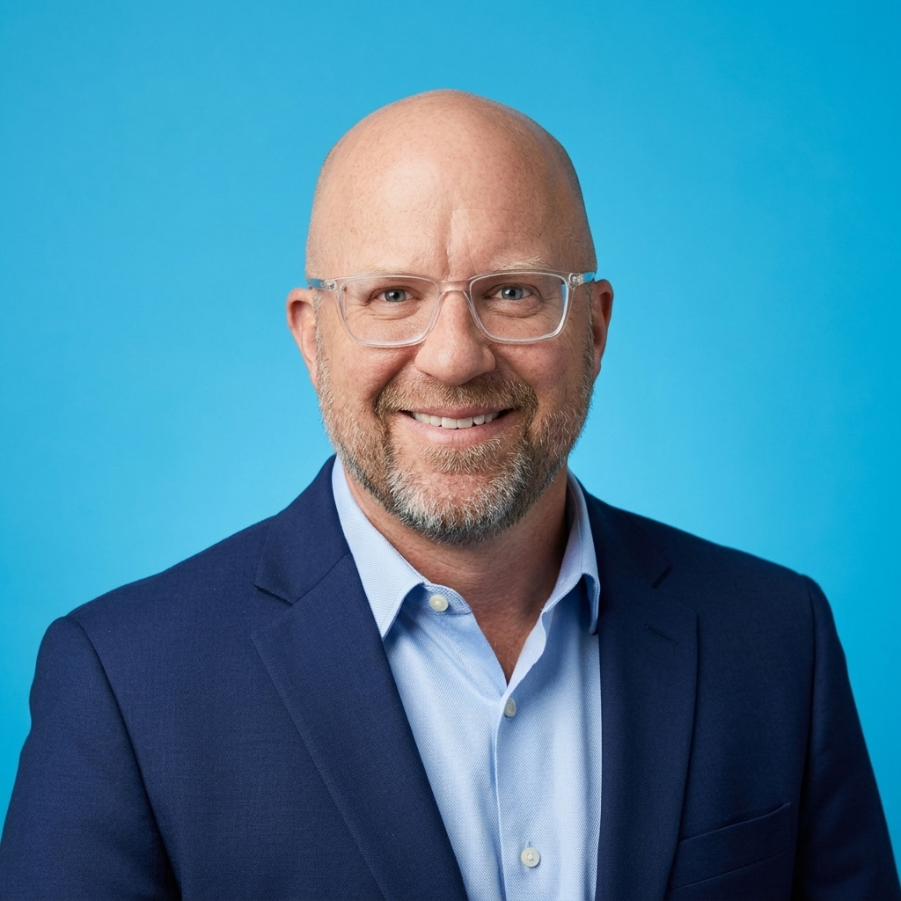

The customer who couldn't reach you called your competitor next.
I help small business owners capture and follow up with the leads they're already getting — instead of losing them to missed calls, slow responses, and manual busywork. I build automated systems using GoHighLevel and n8n that work while you're with a customer, not just when you're at a desk.
What I build
Systems built specifically for how small and rural businesses actually operate — not enterprise software forced into a small shop.
Missed-Call Text-Back
When you can't pick up, your business still replies — automatically, in seconds, so the caller doesn't hang up and dial the next name on the list.
Automated Lead Follow-Up
No more sticky notes and forgotten callbacks. Every lead gets followed up with, on schedule, whether you remember to or not.
AI Chatbots
Answers common questions any time of day — so you're not repeating yourself for the twentieth time this week.
CRM Workflows
One place to see every lead and customer, built in GoHighLevel and set up around how you actually run your business.
How it works
Three steps, start to finish. No jargon you have to decode.
Free discovery call
We talk about your business, not my pitch. Thirty minutes, no obligation.
I build your system
Set up in GoHighLevel and n8n, tailored to your business — not a one-size-fits-all template.
You start capturing leads
I test everything, hand it off, and stick around to make sure it keeps working.
About

I'm Adam, owner of Midwest & Main. I'm early in my consulting work and building out my portfolio — which means founding clients get more of my direct attention and time, at a lower rate than I'll charge later.
If you're a business owner losing leads to a phone that doesn't get answered fast enough, let's talk.
Discovery calls are always free.
I'd rather listen to your actual problem first than pitch you something you don't need. Reach out and let's find a time to talk.